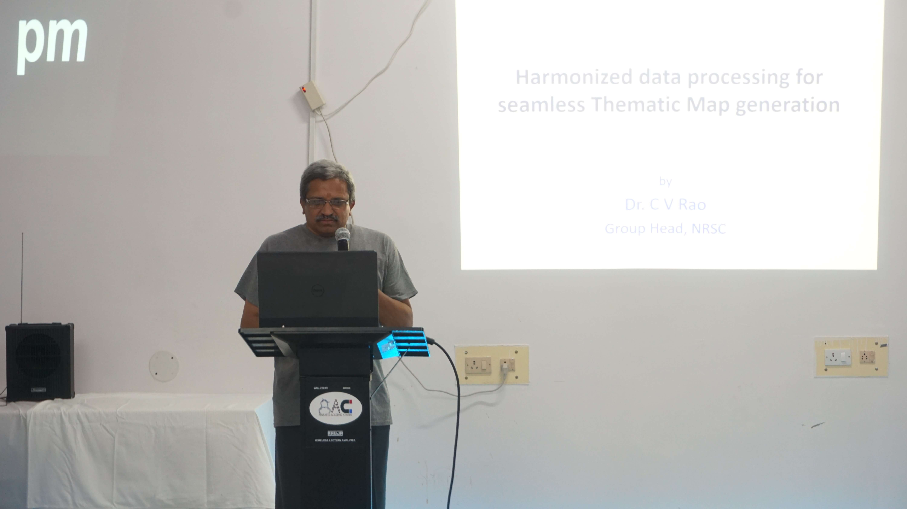

M.Poojitha (CSE - 2nd Year)
M.Poojitha (CSE - 2nd Year)Advanced Academic Center(AAC) in an attempt to work on original research problems has been conducting conclaves in various domains.Resource persons who specialize in various fields are invited to suggest ideas on contemporary problem statements in tune with the strengths of the institute.A conclave called TECHNOLOGICAL CONVERGENCE was held on 21st september,2019 between 1:30 PM and 5:00PM in the focused areas of satellite and medical image processing and drone applications.
ISRO scientists Dr.K.M.M.Rao(Medical Image Processing) , Dr.C.Venkateshwara Rao(Machine Learning aspects in Satellite Image Processing) and Mr.Pradeep Palleli(Drone Applications) from Thanos Technologies were the resource persons.The participating members from the institute included Dr. Jandhyala N Murthy-Director,senior faculty members from the above specializations and senior students of AAC.The long session brainstormed on the most happening research in industry and the technological challenges to find effective solutions with the experience of the faculty and students of the GRIET.Working groups involving the resource person and the faculty are in place.Problem statements leading to a few research proposals spread over 3 to 9 months are being designed.
 NRSC Scientist Dr.C.Venkateshwara Rao
Going by the feedback received from the participants ,the conclave proved to be a great learning experience,especially for the 3rd and 4th year students,who were in need of challenging problem statements. Overall,the experience was very enriching.